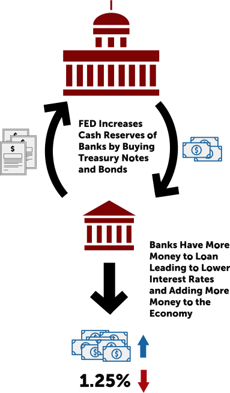
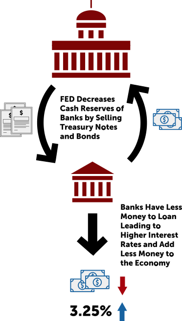

The
Federal
Reserve
The Federal Reserve, also known as the Fed, is the United States’ central bank, arguably the most powerful financial institution in the world. The Fed has many jobs that affect your everyday life, including keeping employment high, prices stable, and long-term interest rates in check. The Fed supervises and regulates banks to protect the U.S. banking system and its consumers.
The Federal Reserve was founded by the U.S. Congress in 1913. Its creation was precipitated by repeated financial panics that afflicted the U.S. economy over the previous century, leading to severe economic disruptions due to bank failures and business bankruptcies. A crisis in 1907 led to calls for an institution that would prevent panics and disruptions.
Referred to simply as the Fed, it has broad power to take measures to ensure there is financial stability in the system. It is also the main regulator of the country’s financial institutions. Banks will often turn to the Fed as a last resort where they can borrow money when there is nowhere else to go.
The Federal Banks of the United States
The Federal Reserve system is made up of 12 regional Federal Banks. These are based in Boston, New York, Philadelphia, Cleveland, Richmond, Atlanta, Chicago, St. Louis, Minneapolis, Kansas City, Dallas, and San Francisco. Each regional Federal Bank has its own board of directors and acts semi-autonomous from each other.
The Fed operatates independently because its decisions do not have to be ratified by the president or any other government official. However, it is still subject to Congressional oversight and must work within the framework of the government’s economic and fiscal policy objectives.
Maximize Employment
+
–
Stabilized Prices and Long-term Interest Rates
+
–
Maximize Employment
Maximum employment does not mean 100 percent employment or zero percent unemployment, and there is not one single level of employment, carved in stone and valid for all eternity, known as the “maximum level of employment.”
Economists recognize that there will always be some level of unemployment because there will always be people quitting or starting new jobs, businesses failing and new ones starting, or specific sectors shrinking and others growing. Because it takes time to find a new job, there will always be a certain level of unemployment, and thus the level that the Fed is tasked with achieving is not zero percent unemployment.
The unemployment level is one that would prevail in normal economic conditions (i.e., in the absence of a boom or recession). This rate has come to be called the “natural rate of unemployment.” This natural rate is determined by structural factors that affect the flexibility or mobility of the labor market. For instance, if workers have greater mobility within their country to work in another region, this would help to reduce the natural rate of unemployment. Regulations that restrict labor mobility will tend to raise the natural rate.
Stabilized Prices and Long-term Interest Rates
In order for people and businesses to make plans for the future, they need to be reasonably confident that prices will remain relatively constant over time. As a result, price instability in the form of either deflation or rapid inflation can have drastic consequences on economic stability.
As noted above the stable prices and moderate long-term interest rates are interpreted as comprising a single mandate. This is because long-term nominal interest rates are set with inflation expectations in mind. For any given nominal interest rate, rapidly rising prices will diminish the real interest rate that lenders receive and debtors have to pay. Thus, in an unstable monetary environment with rapidly rising prices, lenders will want to charge much higher interest rates to mitigate the inflation-rate risk.
*as with most economic policies the Dual Mandate’s affect would take a few years to fully affect the national economy. The Dual Mandate was introduced because of the rampant inflation of the 1970s that was prevalent at the time. Once the Fed’s polices were able to take affect inflation in the United States has been kept to a stable level.
The Dual Mandate
The current mandate of the Federal Reserve first made its way into the Federal Reserve Act in November 1977. The 1970s were plagued with high inflation and unemployment which motivated Congress to reform the original Act of 1913. With the intention of clarifying the Fed’s Board of Governors and the Federal Open Market Committee’s (FOMC) roles, Congress’ Reform Act explicitly identifies “the goals of maximum employment, stable prices, and moderate long-term interest rates.” It is these goals that have come to be known as the Fed’s “dual mandate.”
- maximum employment
- stablilize prices & moderate long-term interest rates
Reserve Requirements
The Fed requires that all commercial banks must maintain a certain amount of cash in reserve. The reserve balance that banks must maintain is typically a percentage of their total interest-bearing and non-interest-bearing checking account deposits (currently 3% to 10%). In other words, the amount of a bank’s required reserves will fluctuate depending on their account totals. The reserve is very important because it helps to ensure that the bank will always be able to give you your money when you ask for it.
This percentage of required reserves directly affects how much money they can “create” in their local economies through loans and investments. It is this connection between the required reserve amount and the amount of money a bank can lend that allows the Fed to influence the economy. If the reserve requirement is raised, then banks have less money to loan and this will have a restraining effect on the money supply. If the reserve requirement is lowered, then banks have more money to loan.
Reserve money is used to process check and electronic payments through the Federal Reserve and to meet unexpected cash outflows. These reserves can be held as “cash on hand,” as a reserve balance at a regional Reserve Bank, or both.
Although the Fed has the power to do so, changing the amount of reserve cash a bank has to have can have dramatic effects on the economy; for this reason, this tool is rarely used. The Fed more often alters the supply of reserves available by buying and selling securities. When the Fed sells securities, it reduces the banks’ supply of reserves. This makes interest rates go up. When the Fed buys securities, it increases the banks’ supply of reserves. This makes interest rates go down.
Find Out How Money in the Bank Grows the Economy
Open Market Operations
The Fed's most affective tool is the buying and selling of government securities in its open market operations. Government securities include treasury bonds, notes, and bills. The Fed buys securities when it wants to increase the flow of money and credit, and sells securities when it wants to reduce the flow.
Here’s how it works. The Fed purchases securities from a bank (or securities dealer) and pays for the securities by adding a credit to the bank’s reserve (or to the dealer’s account) for the amount purchased. The bank has to keep a percentage of these new funds in reserve, but can lend the excess money to another bank in the federal funds market. This increases the amount of money in the banking system and lowers the federal funds rate. This ultimately stimulates the economy by increasing business and consumer spending because banks have more money to lend and interest rates are lowered.
When the Fed wants to decrease the money supply, it sells securities. That transaction deducts the purchase amount from the bank’s reserve (or the dealer’s account). This reduces the amount of money the bank has to lend in the federal funds market and increases the federal funds rate. This move ultimately slows the economy down by decreasing the amount of money banks have to loan, which increases interest rates and typically reduces consumer and business spending.
Expansionary Open Market Operations
This is used when the FED wants to increase the amount of money in the economy and also lower interests rates.
Goal for Expansionary Open Market Operations
To expand the economy and facilitate the flow of money. Expansionary policies are used during economic recessions.
Contractionary Open Market Operations
This is used when the FED wants to decrease the amount of money in the economy and also increase interests rates.
Goal for Contractionary Open Market Operations
To slow down the growth of the economy to aviod the formation of bubbles that can lead to recessions and to control the rate of inflation in the economy.